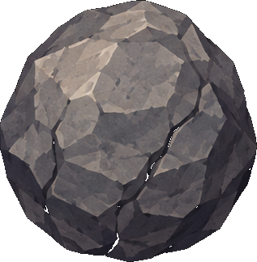
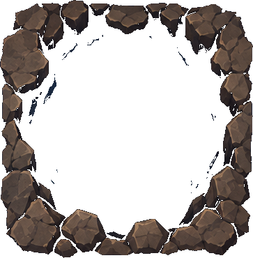
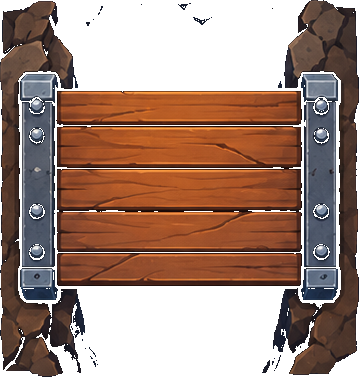
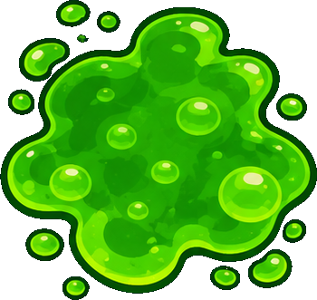
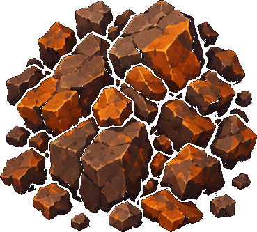
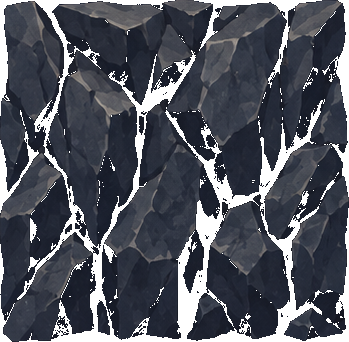

از اینجا شروع کنید — سه گام تا اولین اجرا
نیازی به شناخت آرگومانهای خط فرمان یا ساختار پکیج Python ندارید؛ فقط پوشه را باز کنید و دستور نخست را اجرا کنید.
Python را بررسی کنید
Python 3.10 یا بالاتر را نصب کنید. سپس ترمینال را در پوشهی پروژه باز کنید.
python --versionپروژه را اجرا کنید
این دستور منوی سادهی پروژه را باز میکند. گزینهی ۱ نمونهی BFS آماده را اجرا میکند.
python main.pyفقط دو فایل را کامل کنید
پس از هر تغییر، از منو گزینهی ۲ را بزنید تا آزمونهای عمومی اجرا شوند.
src/deepcore/solver.py
src/deepcore/heuristics.pypython main.pyجستوجوی گاممحور
BFS / DFS / IDS
تمرکز بر ترتیب بسط گرهها و تعداد گامها.
جستوجوی هزینهمحور
UCS
اولویت با کمترین هزینهی مسیر g(n) است.
جستوجوی راهنمادار
GBFS / A*
از h(n) یا g(n)+h(n) برای انتخاب گره بعدی استفاده میکند.
۱ داستان و عناصر گرافیکی محیط بازی (DeepCore)
پس از وقوع یک زمینلرزه شدید در یک معدن زیرزمینی، تعدادی از معدنچیان (M) در اتاقکهای عمیق معدن محبوس شدهاند. شما باید الگوریتمهای تصمیمگیری و مسیریابی ربات حفار DeepCore (S) را طوری پیادهسازی کنید که با کمترین مصرف انرژی، تمامی معدنچیان را سوار کپسول نجات خود کرده و به سکوی استخراج (E) برساند.
ربات مجهز به مته پلاسما و کپسول نجات تحت فشار. قادر به حرکت در ۴ جهت، هل دادن تختهسنگها و حفاری آوار است.
با ورود ربات به خانه معدنچی، او وارد کپسول نجات میشود ($k \leftarrow k + 1$) و وزن ربات را در تمامی گامهای بعدی افزایش میدهد.
مقصد نهایی عملیات. زمانی که تمام معدنچیان سوار شده باشند و ربات روی این سکو قرار گیرد، عملیات موفقیتآمیز است.

Bتختهسنگ قابل هل دادن به خانه مجاور (اگر خانه پشت آن خالی، لجن یا پرتگاه باشد). کشیدن سنگ به عقب مجاز نیست.

Oورود مستقیم به پرتگاه ممنوع است؛ اما با هل دادن یک تختهسنگ ($B$) به درون آن، پرتگاه پر شده و تبدیل به پل میشود.

=پس از افتادن سنگ در پرتگاه $O$، آن خانه برای همیشه به یک پل ایمن با هزینه حرکت پایه ۱ تبدیل میشود.

~مسیرهای اسیدی و لجنی که عبور از هر خانه آن ۵ واحد انرژی پایه (به علاوه جریمه بار کپسول) مصرف میکند.

@مانع صخرهای که با عمل DRILL از خانه مجاور (با هزینه ثابت ۱۰) متلاشی شده و به زمین هموار تبدیل میشود.

#دیوارهای سنگی غیرقابل نفوذ و غیرقابل حفاری که مرزهای اتاقکها و دالانهای معدن را تشکیل میدهند.
$\text{Cost} = 6 + 2k$

چالش پیچیدگی و فضای حالت در مراحل ۱ تا ۵
در مراحل پیشرفته (Level 3 تا Level 5)، اتاقکهای معدن دارای چندین تختهسنگ در فضاهای باز (با ضریب انشعاب بالا) و پرتگاههای چندبخشی (OO و OOO) هستند. برای عبور از یک پرتگاه ۲ یا ۳ خانهای، ربات باید سنگ اول را داخل خانه اول بیندازد تا پل اول ساخته شود، سپس از روی پل اول عبور کرده و سنگ دوم را هل داده و داخل خانه دوم پرتگاه بیندازد!
در مراحل پیشرفته، تفاوت هیوریستیکها را با متریکهای مستقل از سختافزار مانند تعداد گرههای بسطیافته، تعداد گرههای تولیدشده و بیشینه اندازه فرانتیر مقایسه کنید. زمان اجرا فقط میتواند بهصورت اطلاعات جانبی در گزارش بیاید و معیار نمرهدهی نیست.
۲ فرمولبندی رسمی مسئله بر اساس استانداردهای فصل ۳ کتاب AIMA
| مؤلفه AIMA | تعریف ریاضی و پیادهسازی در کد |
|---|---|
| فضای حالت (State) |
هر حالت $s$ توسط یک چندتایی ۶بخشی از کلاس DeepCoreState مدل میشود:
$$s = \big(\text{bot\_pos}, \text{carried}, \text{boulders}, \text{chasms}, \text{rubble}, \text{miners}\big)$$ |
| حالت اولیه ($s_0$) |
وضعیت آغازین بازی که در آن $\text{bot\_pos} = S$، تعداد معدنچیان سوارشده برابر صفر است ($\text{carried} = 0$) و مجموعههای تغییرناپذیر frozenset مکان اولیه المانهای $B, O, @, M$ را در بر دارند.
|
| مجموعه عملها ($A(s)$) |
حداکثر ۱۲ عمل مجاز در چهار جهت اصلی $d \in \{\text{N}, \text{S}, \text{E}, \text{W}\}$:
$$A(s) \subseteq \{\text{MOVE}_d, \text{PUSH}_d, \text{DRILL}_d \mid d \in \{\text{N}, \text{S}, \text{E}, \text{W}\}\}$$ |
| مدل انتقال ($T(s, a)$) |
متد env.transition(state, action) وضعیت بعدی $s'$ و هزینه گام را برمیگرداند:
• در عمل $\text{MOVE}_d$: اگر خانه مقصد شامل معدنچی باشد، معدنچی حذف شده و $\text{carried}' = \text{carried} + 1$ میشود. • در عمل $\text{PUSH}_d$: ربات در جای سنگ قرار میگیرد. اگر خانه پشت سنگ پرتگاه باز باشد، هر دو المان حذف شده و پل تشکیل میشود. • در عمل $\text{DRILL}_d$: آوار از نقشه محو شده و ربات تغییر مکان نمیدهد. |
| آزمون هدف ($G(s)$) |
رسیدن به سکوی استخراج به شرطی که تمامی معدنچیان داخل کپسول سوار شده باشند:
$$G(s) = \text{True} \iff \big(|\text{state.miners}| = 0\big) \land \big(\text{state.bot\_pos} = \text{env.elevator\_pos}\big)$$ |
فرمول دقیق تابع هزینه گام $c(s, a, s')$
اگر در وضعیت فعلی $s$، تعداد $k = s.\text{carried}$ معدنچی سوار کپسول نجات ربات باشند، هزینه اجرای عمل $a$ به صورت زیر تعیین میگردد:
۳ مستندات متدها و راهنمای ورودی و خروجی (API Reference)
کدهای زیرساختی محیط و رابط کاربری آماده هستند. شما منحصراً فایلهای solver.py، heuristics.py و test_search.py را پیادهسازی و تکمیل مینمایید.
۱. کلاس وضعیت DeepCoreState (فایل state.py)
@dataclass(frozen=True)
class DeepCoreState:
bot_pos: Tuple[int, int] # مختصات سطر و ستون ربات (r, c)
carried: int # تعداد معدنچیان سوار شده (k)
boulders: FrozenSet[Tuple[int, int]] # موقعیت تختهسنگهای آزاد
chasms: FrozenSet[Tuple[int, int]] # موقعیت پرتگاههای پرنشده
rubble: FrozenSet[Tuple[int, int]] # موقعیت آوارهای خردنشده
miners: FrozenSet[Tuple[int, int]] # موقعیت معدنچیان نجاتنیافته۲. کلاس خروجی SearchMetrics (فایل state.py)
تمامی توابع الگوریتمهای جستجو در solver.py باید این شیء را بازگردانند:
@dataclass
class SearchMetrics:
algorithm_name: str = "Unknown"
solved: bool = False # در صورت رسیدن به هدف True شود
solution_actions: List[str] = ... # لیست رشتهای عملها مثل ["MOVE_N", "PUSH_E", ...]
total_cost: int = 0 # مجموع هزینه گامهای مسیر بهینه یا به دست آمده
nodes_expanded: int = 0 # تعداد وضعیتهای پاپشده از فرانتیر
nodes_generated: int = 0 # تعداد وضعیتهای فرزند تولیدشده
max_frontier_size: int = 0 # بیشترین اندازه همزمان صف یا پشته فرانتیر
max_memory_size: int = 0 # بیشترین تعداد حالتهای همزمان در حافظه (فرانتیر + اکسپلورد)
runtime_sec: float = 0.0 # زمان اجرای الگوریتم بر حسب ثانیه
explored_order: List[Tuple[int, int]] = ... # ثبت bot_pos گرهها به ترتیب بسط برای رسم نقشه حرارتی
status_message: str = "Ready"۳. متدهای محیط DeepCoreEnv (ورودی env)
| متد | خروجی | کاربرد و توضیحات |
|---|---|---|
env.get_initial_state() |
DeepCoreState |
وضعیت ابتدایی نقشه ($s_0$) را در اختیارتان میگذارد. |
env.is_goal(state) |
bool |
بررسی میکند آیا وضعیت دادهشده شرط آزمون هدف $G(s)$ را داراست یا خیر. |
env.get_successors(state) |
List[Tuple[Action, DeepCoreState, int]] |
تولید فرزندان در جستجوی پیشرو: لیستی از سهتاییهای (action, next_state, step_cost) تولید میکند. برای رشته عمل از action.value استفاده نمایید.
|
env.get_goal_states() |
List[DeepCoreState] |
مجموعهای از حالتهای پایانی همارز در محل آسانسور را برای مقداردهی اولیه فرانتیر پسرو در Bidirectional Search ارائه میدهد؛ حالت نهایی یکتا نیست، چون آوار، سنگها و پلهای غیرضروری میتوانند بین جوابهای معتبر متفاوت باشند. |
env.get_predecessors(state) |
List[Tuple[Action, DeepCoreState, int]] |
جستجوی معکوس در Bidirectional Search: لیستی از سهتاییهای (action, prev_state, step_cost) برمیگرداند که با اجرای عمل در prev_state دقیقاً به state میرسیم. جستجوی پسرو باید از همه حالتهای برگشتی get_goal_states() آغاز شود، با get_predecessors گسترش یابد و هنگام اتصال دو نیمه، عملهای نیمه پسرو را به ترتیب معکوسِ حرکت از نقطه تلاقی تا هدف به پاسخ اضافه کند.
|
۴ الگوریتمهای پیادهسازی پروژه (اصلی و امتیازی)
| الگوریتم | تابع در solver.py |
دسته | نکات الزامی پیادهسازی |
|---|---|---|---|
| BFS | breadth_first_search(env) |
ارائه شده (الگو) | کد کامل در اختیارتان است تا نحوه پیمایش صف FIFO و ثبت متریکها را مشاهده کنید. |
| DFS | depth_first_search(env, max_expansions) |
اصلی | جستجوی عمق اول گراف با پشته LIFO و بررسی مجموعههای تکراری (Cycle checking). |
| IDS | iterative_deepening_search(env, max_depth) |
اصلی | جستجوی عمیقکننده تکراری با افزایش لایه به لایه عمق مجاز از ۰ تا max_depth. |
| Bidirectional | bidirectional_search(env) |
اصلی | توسعه همگام صف پیشرو با get_successors و صف معکوس با get_predecessors تا زمان تلاقی. |
| UCS | uniform_cost_search(env) |
اصلی | صف اولویت بر حسب هزینه مسیر $g(n)$. آزمون هدف باید هنگام پاپ شدن گره از صف انجام گیرد. |
| Greedy Best-First | greedy_best_first_search(env, heuristic) |
اصلی | مرتبسازی صف اولویت منحصراً با مقدار هیوریستیک $f(n) = h(n)$. |
| A* Search | a_star_search(env, heuristic) |
اصلی | مرتبسازی صف با $f(n) = g(n) + h(n)$ و بازگشایی گرهها در صورت کشف مسیر کمهزینهتر. |
| طراحی دو هیوریستیک | h1_basic و h2_advanced |
اصلی (در heuristics.py) |
طراحی دو تابع قابل قبول و سازگار که هیوریستیک منهتن ساده را مغلوب کنند. |
| Weighted A* | weighted_a_star_search(env, heuristic, weight) |
امتیازی | مرتبسازی صف بر اساس $f(n) = g(n) + W \cdot h(n)$ برای $W > 1$ (مانند $W \in \{1.5, 2.0, 3.0\}$). |
| IDA* | ida_star_search(env, heuristic, max_expansions) |
امتیازی | جستجوی عمیقکننده تکراری با کران هزینه $f\text{-cost}$ و مصرف حافظه خطی. |
| SMA* | sma_star_search(env, heuristic, memory_limit) |
امتیازی/اختیاری | نسخه حافظهمحدود A*؛ باید محدودیت حافظه، حذف کمامیدترین برگ و بازیابی مقدار backed-up را شفاف گزارش کنید. این بخش جایگزین الزامات اصلی نیست. |
۵ طراحی علمی توابع هیوریستیک (فصل ۳ کتاب AIMA)
تابع h_naive_manhattan ($H_0$) صرفاً فاصله منهتن ربات تا نزدیکترین معدنچی را میسنجد. شما باید دو تابع زیر را با رعایت شرط قابل قبول بودن (Admissibility) و غلبه (Dominance) پیادهسازی کنید:
h1_basic(state, env) (درخت پوشا + جریمه قطعی بار کپسول)
الف) درخت پوشای کمینه (MST): حتی در فرضی که تمام خانهها بدون مانع و دارای هزینه پایه ۱ باشند، ربات برای نجات همه معدنچیان و رسیدن به آسانسور $E$ حداقل باید به اندازه وزن درخت پوشای کمینه بر روی مجموعه رئوس زیر گام بردارد:
ب) کران پایین جریمه بار کپسول: هر معدنچی که هماکنون داخل کپسول است ($k = \text{state.carried}$)، در تمام گامهای باقیمانده تا رسیدن به آسانسور حداقل به ازای هر گام $+2$ هزینه اضافی ایجاد میکند. علاوه بر آن، هر معدنچی منتظر $m \in \text{state.miners}$ نیز پس از سوار شدن، حداقل باید به اندازه فاصله منهتن خود تا آسانسور حمل شود و در هر گام $+2$ جریمه ایجاد نماید. حاصل جمع این مقادیر اکیداً قابل قبول (Admissible) است:
h2_advanced(state, env) (فاصله واقعی دیوارها + شکستن سد + هرس بنبست)
این تابع باید بر $H_1$ غلبه کند ($H_2(s) \ge H_1(s)$) و شاخههای بزرگ درخت جستجو را در مراحل ۴ و ۵ حذف کند:
-
فاصلههای ژئودزیک واقعی (Wall-Aware Distances): به جای فاصله منهتن ساده که از میان دیوارهای سنگی (
#) عبور فرضی میکند، یک بار با یک BFS سریع ماتریس کوتاهترین فاصله واقعی میان تمام جفتخانهها را با نادیده گرفتن موانع دینامیک محاسبه و کش کنید ($d_{\text{Wall}}$) و فرمول MST و جریمه بار را با $d_{\text{Wall}}$ محاسبه نمایید. -
هزینه افزایشی بازکردن مانع (Incremental Barrier Cost): فقط هزینه عملیاتیِ اجتنابناپذیرِ عمل لازم برای بازکردن مانع را اضافه کنید: هزینه
PUSHبرای ساخت پل یا هزینهDRILLبرای پاککردن آوار. هزینه حرکت ربات روی خانه مبدأ یا مقصد، و هزینه حرکت روی پل، باید فقط یکبار در جزء فاصله/MST حساب شود؛ همان گام را دوباره بهعنوان هزینه مانع اضافه نکنید. اگر امکان انتخاب مسیر یا مانع وجود دارد، کمینه هزینه لازم را بگیرید تا هیوریستیک بیشبرآورد نکند. -
هرس بنبستهای سنگین (Deadlock Detection): اگر پرتگاهی در مسیر باقی مانده باشد ولی تمامی تختهسنگهای آزاد در گوشه دو دیوار عمود بر هم قفل شده باشند و دیگر قابل حرکت نباشند، وضعیت حلناپذیر است و تابع مقدار $\infty$ (یعنی
float('inf')) برمیگرداند تا آن شاخه در همان لحظه هرس گردد.
مقایسهی هیوریستیکها روی هر پنج نقشهی داخلی (level1 تا level5) و با تنظیمات و ترتیب شکستن تساوی یکسان انجام میشود. معیارهای عملکردی عبارتاند از
nodes_expanded، تعداد گرههای تولیدشده و max_frontier_size یا بیشینهی حافظهی جستجو. ابتدا حلشدن، اعتبار مسیر، برابری هزینهی A* و UCS، قابل قبول بودن و غلبهی هیوریستیک بررسی میشود؛ سپس کاهش متریکها نسبت به خط مبنا با میانگین حسابیِ پنج نقشه گزارش میگردد. هیچ آستانهی زمانی یا درصد ثابت، شرط قبولی یا نمرهی مستقل نیست. زمان اجرا فقط برای مشاهدهی غیرنمرهای مجاز است.
۶ بارمبندی تفصیلی پروژه (۱۰۰ نمره اصلی + حداقل ۳۰ نمره امتیازی)
| بخش | عنوان آزمون و پیادهسازی | نمره | معیار قبولی |
|---|---|---|---|
| جستجوی ناآگاهانه (۳۵ نمره) | پیادهسازی DFS و IDS | ۱۲ | مدیریت پشته و جلوگیری از دور؛ یافتن مسیر با کمترین تعداد گام در IDS. |
| پیادهسازی Bidirectional Search | ۱۳ | بسط متقارن و الحاق درست مسیرهای پیشرو و معکوس در نقطه تلاقی. | |
| پیادهسازی Uniform Cost Search (UCS) | ۱۰ | یافتن هزینه بهینه و کمینه بودن هزینه مسیر نسبت به BFS در تمامی مراحل. | |
| جستجوی آگاهانه و تست (۴۵ نمره) | پیادهسازی Greedy Best-First و موتور A* Search | ۱۵ | عملکرد بدون باگ صف اولویت و انطباق کامل هزینه بهینه A* با UCS. |
پیادهسازی هیوریستیک اول (h1_basic) |
۱۲ | قابل قبول و سازگار بودن با استدلال روشن؛ سپس گزارش کاهش تعداد گرههای بسطیافته نسبت به $H_0$ روی هر پنج نقشه و میانگین/میانه مشخص آن. درصد ثابت ۵۰٪ شرط قبولی نیست. | |
پیادهسازی هیوریستیک پیشرفته (h2_advanced) |
۱۳ | قابل قبول و سازگار بودن، اثبات غلبه ($H_2 \ge H_1$)، برابری هزینه جواب A* و UCS، و بهبود تعداد بسطها و بیشینه فرانتیر نسبت به $H_1$ روی هر پنج نقشه. زمان اجرا نمره ندارد. | |
تکمیل و پاس شدن تستها در test_search.py |
۵ | پاس شدن موفق تمام ۷ تست آزمون واحد با دستور python test_search.py. |
|
| گزارش تحلیلی (۲۰ نمره) | فایل Report.pdf شامل جداول و اثباتها |
۲۰ | اثبات ریاضی Admissibility و Consistency توابع هیوریستیک همراه با مقایسه تجربی متریکها. |
| بخش امتیازی (حداقل ۳۰+ نمره) | پیادهسازی Weighted A* و تحلیل پارامتر $W$ | ۱۰+ | بررسی مصالحه سرعت و کیفیت جواب به ازای $W \in \{1.5, 2.0, 3.0\}$. |
| پیادهسازی IDA* | ۱۰+ | بررسی بهینگی و کاهش چشمگیر بیشینه اندازه حافظه فرانتیر در مقایسه با A*. | |
| پیادهسازی SMA* | ۱۰+ | مدیریت سقف حافظه، حذف کمامیدترین برگ، بازگشت مقدار backed-up و گزارش اثر محدودیت حافظه با max_frontier_size. |
اگر تابع هیوریستیک شما در هر حالتی هزینه را بیشتخمین (Overestimate) بزند (یعنی $h(n) > h^*(n)$ باشد)، الگوریتم A* جواب زیربهینه تولید خواهد کرد و نمره بخش هیوریستیک صفر منظور خواهد شد. برای اطمینان، همواره هزینه خروجی A* را با هزینه UCS که مرجع بهینه است مقایسه کنید.